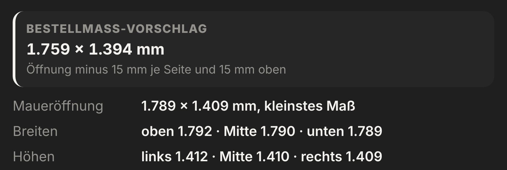
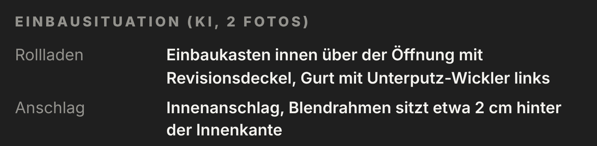

Position 1 · Wohnzimmer
Bestellmaß
vorgerechnet.
Als Vorschlag: Öffnung minus Ihr eigener Abzug. Dazu die Einbausituation aus den Fotos.
- Abzug einstellbar
- Einbausituation per KI
- Vor der Fertigung nachmessen

